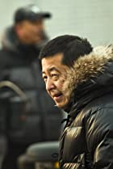
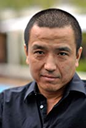
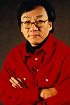
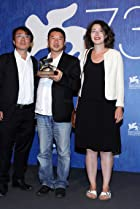
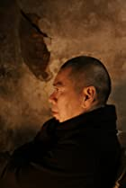

Ang Lee has received nine Academy Award Nominations, of which he has won three times. His well-known works
are: Sense and Sensibility, Broken Mountain and Crouching Tiger, Hidden Dragon. Wong Kar-Wai is a Hong-Kong director known for his distinct styles and approach. He received two Oscar
nominations. His well-known works are: Chungking Express, In the Mood for Love and The Grandmaster. Hong Kong cinema has always been important in Asia and one of its most representative directors is John Woo,
who has been a major influence on the action genre, even beyond Asia.

Zhangke Jia was born on May 24, 1970 in Fenyang, Shanxi, China. He is a producer and director, known for A Touch
of Sin (2013), Mountains May Depart (2015) and Still Life (2006).

Ye Lou was born (in 1965) and grew up in Shanghai, a city he would film beautifully in his Suzhou River (2000) (Suzhou River).
Wen Jiang was born on January 5, 1963 in Tangshan, China. He is an actor and director, known for Rogue One: A Star Wars Story (2016),
Let the Bullets Fly (2010) and Devils on the Doorstep (2000).

Born on November 6, 1947 in Shanghai, China, Edward Yang has become one of the most talented international filmmakers of his generation.

Bing Wang was born in 1967 in Xi'an, Shaanxi, China. He is a director and cinematographer, known for The Ditch (2010), Tie Xi Qu: West of the Tracks (2002) and Three Sisters (2012).

Born in Kuching, Malaysia, he graduated from the Drama and Cinema Department of the Chinese Cultural University of Taiwan and worked as a theatrical producer and TV director.